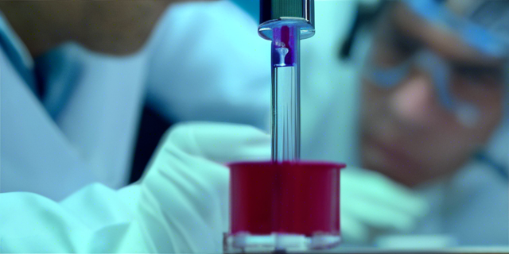

실험실 프로토콜 모음

이곳에는 실험 방법에 대한 간략한 정보가 있습니다. 계속해서 자주 사용하는 프로토콜들을 정리할 예정입니다.
1 목차
2 Miniprep
2.1 왜 이름이 miniprep 인가요?
다양한 회사에서 plasmid DNSA 를 정제하는 하는 키트를 생산하고 있는데, 시작하는 E.coli 배양액의 양에 따라서 다음과 같이 miniprep, midiprep, maxiprep 라고 공통적으로 부르고 있습니다. 이름에서 알 수 있듯 양이 적으면 mini 많으면 maxi 입니다.
miniprep 은 (상대적으로) 빠르고 작은 규모로 plasmid DNA 를 뽑아 낼 수 있기에 많이 사용되고 있습니다. 원리는 alkaline lysis method 를 사용하고 있는데 간단히 이야기 하면 염기성 용액으로 셀을 깨주고, 빠르게 중화시켜 Plasmid DNA 만 선택해 내는 방법 입니다. 보통의 경우 miniprep 으로 약 50µg 의 plasmid DNA 를 얻을 수 있습니다.
miniprep 에 사용되는 다양한 키트가 있지만, 여기에서는 Qiagen Spin Miniprep 키트 기준으로 설명합니다.
2.2 준비물
- 하룻밤 키운 E.coli 배양액 (1-5ml)
- 차가운 P1 버퍼 (50 mM Tris-HCl pH 8.0, 10 mM EDTA, 100 µg/ml RNaseA) RNaseA 가 들어있습니다, 항상 냉장 보관하세요.
- P2 버퍼 (200 mM NaOH, 1% SDS)
- N3 버퍼 (4.2 M Gu-HCl, 0.9 M potassium acetate, pH 4.8)
- PB 버퍼 (5 M Gu-HCl, 30% ethanol)
- PE 버퍼 (10 mM Tris-HCl pH 7.5, 80% ethanol)
- EB 버퍼 (10 mM Tris·Cl, pH 8.5; DW 로 대체하셔도 됩니다.)
- QIAprep spin column (키트에 포함되어 있음)
- Centrifuge
- 멸균된 1.5-ml microcentrifuge 튜브
2.3 방법
- microcentrifuge 튜브에 1.5 ml 의 배양액을 넣어 줍니다.
- 최대 속도로 Centrifuge for 1 min at room temperature, gently aspirate out the supernatant and discard it.
- 충분한 크기의 cell pellet 이 생길때 까지 반복합니다.
- 250 µl 의 차가운 Buffer P1 를 넣어주고, Resuspend pelleted bacterial cells
- Add 250 μl Buffer P2 and 조심스럽게 invert the tube 4–6 times to mix.
- Add 300 µl of Buffer N3.
Proceed to the next step within immediately !
- Close the tube tightly and invert the tube 4 - 6 times . The solution should become cloudy.
- Centrifuge for 10 min at 13,000 rpm (~17,900 x g) in a table-top microcentrifuge. A compact white pellet will form. Apply the supernatants from step 4 to the QIAprep spin column by decanting or pipetting.
- Centrifuge for 30–60 s. Discard the flow-through. Spinning for 60 seconds produces good results.
- Wash QIAprep spin column by adding 0.75 ml Buffer PE and centrifuging for 30–60 s.
- Discard the flow-through, and centrifuge for an additional 1 min to remove residual wash buffer.
IMPORTANT: Residual wash buffer will inhibit subsequent enzymatic reactions.
- Place the QIAprep column in a clean 1.5 ml microcentrifuge tube. To elute DNA, add 50 μl Buffer EB (10 mM Tris·Cl, pH 8.5) or water to the center of each QIAprep spin column, let stand for 1 min, and centrifuge for 1 min.
- 만약 높은 농도로 elution 받고 싶다면 add 30 μL 의 DW 를 컬럼 가운데에 넣고, incubate at room temperature on the bench for 5 mins and then centrifuge for 1 min.
- 한번에 10 개 이상의 miniprep 을 한다면 vacuum manifold 방법을 사용하는게 빠릅니다.
- cell lysate 를 column 에 두번 거치면 수율이 약 20% 증가됩니다.
- 시퀀싱 경과가 안나오는 이유는 대체로 염에 의한 오염으로, Washing 하는 과정을 충분하게 해야합니다.
3 ELISA (enzyme linked immunosorbent assay)
효소면역 정량법 (elisa) 는 오늘날 가장 널리 이용되는 면역정량법입니다. 항원 - 항체반응을 이용하여 항원이나 항체를 정성, 정량할 수 있는 감도가 우수한 실험법으로 항체에 효소를 결합시켜 항원항체반응을 확인하는 방법입니다. 간단하고 비용이 적게 들어 다량분석이 가능합니다.
3.1 원리
이름에서 알 수 있듯이 효소가 사용됩니다. 항원의 농도는 기질 전환 정도에 달라집니다 항체나 항원이 고체상에 흡착되어있으며 이렇게 해야지만 결합하지 않은 free 항원들을 세척으로 없앨 수 있습니다. 실험동물을 immunization 한 후 얻은 serum 이나 fusion 을 통해 얻은 하이브리도마의 culture supernatant 안에 원하는 항체가 생성되어있는지 확인할 수 있습니다. 방사능을 사용하지 않으면서 검사할 수 있고 샌드위치와 경쟁적 ELISA 방법이 가장 많이 사용됩니다. Dirent ELISA 도 사용되는데 항원이 고체상에 고정됩니다. 이 방법은 항원특이적 항체 검출시에 용이합니다. 효소로는 간단한 기질을 넣어주었을때 색이 나는 반응을 이용합니다. 대표적으로는 alkaline phosphatase 와 HRP(horseradish peroxidase) 가 사용됩니다.
3.2 종류
- Direct ELISA: 항원과 반응하는 항체에 바로 효소를 결합시킨다.
- Indirect ELISA: 항원과 결합하는 항체 (1 차항체) 에는 효소가 없고, 그 항체와 결합하는 항체 (2 차항체) 에는 효소가 결합되어있다. 일반적으로 isotype 에 대한 항체에 효소가 결합된 형태로 판매되고 있다. 자신이 이용하는 일차항체의 isotype 에 맞는 효소결합항체를 구입하여 사용하면된다.항체를 정량 및 정성적으로 분석 할때 사용한다.
- Sandwich ELISA: 항원에 대한 항체를 먼저 well 에 결합시키고 그 항체에 대한 항원 (시료) 을 결합시킨다. 그 후 직접적이나 간접법으로 조사한다. 항원을 정성 및 정량적으로 분석한다.
4 DNA 서열 분석하기
생거 시퀀싱 의 비용이 워낙 저렴해져서, 실험을 할 때 DNA 서열을 확인하는 것은 일상화 되었습니다. 일반적으로 시퀀싱을 서비스해주는 업체에서는 결과 값을 ab1 파일로 전달해 줍니다.1
4.1 ab1 파일을 열기 위한 프로그램
저는 개인적으로 ApE 를 선호하지만, 다음과 같이 다양한 프로그램이 있습니다. 마음에 드시는 것을 선택하시면 됩니다.
- 4Peaks (Mac)
- SnapGene Viewer (Mac/Windows)
- FinchTV(Mac/PC)
- Sequence Scanner (Windows)
- Chromas (Windows)
- ApE(Mac/Windows)
4.2 참고 사항
- 믿을 수 있는 DNA 서열은 trace 크로마토그램이 서로 겹쳐있지 않아야 합니다
- DNA 서열은 500-700 개 까지는 믿을 만합니다: 생거 시퀀싱에는 한계로 인해서 한 번에 약 600 개 정도 까지의 결과값만 신뢰할 수 있습니다. 최근에는 약 1000 개까지도 신뢰할 만합니다.
- DNA 처음 20-30 개의 서열은 신뢰도가 낮습니다. 그래서 Primer 가 붙는 위치를 원하는 서열의 앞쪽 50 개 정도로 선택하는게 좋습니다.
- DNA 시퀀싱을 보낼 샘플은 깨끗해야 합니다. 항상 깨끗한 튜브에 깔끔하게 준비한 DNA 샘플을 보내세요. 시퀀싱 반응이 되지 않더라도 업체는 돈을 받습니다. 그리고 생각보다 시퀀싱 반응은 오염에 민감합니다.
5 SDS-PAGE
5.1 SDS-PAGE Gel 만들기
준비물 : - 2X running gel buffer : 750 mM Tris-HCl, pH8.8 상온보관 - 1x stacking gel solution : 62.5mM Tris-HCl, pH6.8, 4% acrylamide 냉장보관 - 30% acrylamide stock solution (29:1): 냉장보관 - 10% Ammonium persulfate : 냉장보관
Acrylamide 의 quality 는 해상도에 영향을 줍니다. 따라서 high quality 를 사용하시는 편이 좋고 가급적 빠른 시간내 소비하는 것이 좋습니다.
- 2x running gel buffer 5ml + 20% acrylamide stock 5ml + 10% APS 100ul 섞어 줍니다.
- TEMED 10 ul 넣고 천천히 섞어줍니다.
- Gel cast 에 기포가 생기지 않게 조심히 부어 줍니다.
- 100% Ethanol 을 위에 조심스럽게 넣습니다. 양은 500ul 정도 입니다.
- 30 분후 Gel 이 굳은 걸 확인하고 DW 로 gel 윗 부분을 한번 씻어줍니다.
- 1x stacking gel solution 1ml + 10% APS 10ul 를 섞어 줍니다.
- TEMED 1ul 를 마지막으로 넣어 천천히 섞어 줍니다.
- 5 번 과정을 끝낸 running gel 위에 붇고 comb 을 꼽아 줍니다.
- 20 분후 comb 을 뽑고 실험에 사용합니다.
- Gel 이 굳는 시간은 전적으로 APS 의 첨가량에 따라 달라지며 시간이 촉박한 경우 APS 의 양을 늘려 줍니다. Gel 이 완전히 굳지 않았을 경우에 해상도는 떨어집니다. 이러한 점에서 오랜 시간 굳히는 방법보다는 APS 의 양을 늘려 빨리 굳히는 편이 좋습니다.
- SDS 는 sample buffer 와 running buffer 에 들어있으므로 gel 에 넣지 않아도 해상도에 문제가 없습니다.
6 DNA ligation
6.1 Standard Protocol: Insert + Vector DNA Ligation
대부분의 경우 3 insert : 1 vector 비율을 추천한다. 또한 ligation 반응 시 총 DNA 의 양은 100ng 정도가 권장 된다.
- Combine the following in a PCR or Eppendorf tube:
- 25ng Vector DNA
- 75ng Insert DNA
- Ligase Buffer (1μL/10μL reaction for 10X buffer, and 2μL/10μL reaction for 5X buffer) 0.5-1μL T4 DNA Ligase
- DW 를 넣어 total 10μL
- 만약 DNA 농도가 너무 낮다면 total volume 을 증가 시켜서 진행한다.
- 항상 Vector 만 넣은 control 실험을 하고 다양한 vector : insert 비율을 시도 한다.
- RT 에서 2 시간 혹은 16°C 에서 overnight 반응 시킨다.
- “high concentration” ligase 를 사용하는 경우 RT 5 분이면 충분하다.
- transformation 을 진행한다.
6.2 Vector:Insert 비율에 대하여
보통 3:1 비율로 넣어줄 경우 충분하지만 안될 경우 vector: insert 비율을 조절 해 줄 필요가 있다. 자동으로 계산해주는 도구 이 있으니 참고한다.
ligation 단계는 실험의 성공 여부를 알기 힘들기 때문에 항상 아래와 같은 컨트롤 넣어서 실험을 하는 것을 추천합니다.
| Control | Ligase | Interpretation |
|---|---|---|
| Uncut vector | - | Checks viability of competent cells and verifies the antibiotic resistance of the plasmid |
| Cut vector | - | Background due to uncut vector |
| Cut vector | + | Background due to vector re-circularization - most useful for phosphatase treated vector |
| Insert or water | + | Any colonies indicate contamination of intact plasmid in ligation or transformation reagents |
7 PCR
1983 년 Kary Mullis 에 의해 고안. DNA 중합효소를 이용하여 DNA, RNA 의 특정영역을 시험관 내에 대량으로 증폭 80 년대 제한효소 (restriction enzyme) 의 발견에 의한 gene cloning 법 이후, 90 년대 생명공학 연구의 혁명적인 사건 연구하고 싶은 유전자는 무엇이든 대량 생산이 가능.
7.1 목적
복잡한 전체 genome 중에 연구하고자 하는 유전자가 희귀유전자를 분석하고 연구하는데 가장 큰 문제점이였다. PCR 은 특정 DNA sequence 의 copy 수를 기하급수적으로 증폭시킴으로써 증폭된 DNA 를 여러 가지 실험에 이용할 수 있고, 실험 결과를 토대로 분자생물학, 의학, 이학, 농학, 수의학, 식품과학, 환경과학 연구에 응용할 수 있음
7.2 PCR 구성 요소
- DNA, RNA template: 증폭 대상이 되는 DNA, RNA
- PCR Primers: 증폭할 부분을 잡는 짧은 염기서열.
- Taq polymerase: 열에 특별히 강한 유전자 합성효소 (Taq polymerase: Thermus aquaticus 라는 온천에 사는 세균의 DNA polymerase, 72℃가 최적온도, 94℃에서도 안정함)
- dNTP (dATP, dCTP, dGTP, dTTP): 유전자를 합성하는 재료가 되는 각 nucleotide
- MgCl+2: dNTP 와 복합체를 형성하여 효소활성, primer annealing 등에 관여
7.3 PCR 의 단계
- DNA 의 변성 (denaturation)
- 90℃∼96℃로 가열하여 두가닥 DNA 를 단일가닥 DNA 로 분리.
- 일반적으로 94℃사용: 높은 온도일수록 단일가닥 DNA 로 잘 이행되지만 온도가 너무 높으면 Taq DNA polymerase 역시 activity(활성) 가 낮아짐.
- 첫 Cycle 에서는 확실한 변성을 위하여 약 5 분간 지속시킴.
- 이 후의 cycle 에서는 약 1 분간 변성시킴.
- Primer 의 결합 (annealing)
- 50℃∼65℃에서 진행.
- 30sec~1min.
- 염기 간의 결합은 G, C 의경우 세군데 에서 수소결합이 일어나고 A, T 는 두군데에서 결합이 일어나므로 G+C 비율에 따라 결합 온도 결정.
- Primer design 시에 Annealing temperature 를 고려해야 함.
- 일반적으로 GC content 가 50% 가 되는 primer 쌍을 이용하는 것이 바람직.
- DNA 의 합성 (polymerization, extension)
- 70℃∼74℃에서 시행.
- 1min ~ 1min 30sec.
- Taq DNA polymerase 의 합성 속도: 2,000∼4,000 nucleotides/min, 1 kb 마다 1 분 정도의 시간 필요. 원하는 PCR 산물의 크기가 크 거나 반응요소의 농도가 낮을 때에는 시간을 연장할 수 있음.
- Cycle 이 계속되면서 효소 활성이 감소할 수 있고 DNA 산물은 점점 많이 존재하게 되므로 cycle 후반부에는 반응시간을 조금씩 늘려가는 것도 좋은 방법의 하나이며 마지막 cycle 에는 약 10 분 정도 시간을 충분히 주어서 효소의 활성이 충분히 발휘되도록 함.
7.4 PCR 유의 사항
- 여러 component 를 혼합할 때에는 시료간에 오염이 되지 않도록 주의하여야 하며 가능하면 공기를 통한 오염을 방지할 수 있는 tip 을 사용하는 것이 좋습니다. 반응물 혼합 시에는 tube 를 ice 상에 두고서 혼합하여야 상온에서의 잘못 primer annealing 에 의한 extension 을 방지할 수 있습니다. 이론적으로 Taq DNA polymerase 는 최적 온도 이하에서도 반응이 어느 정도 진행됨 으로 상온 등에서 정확하게 annealing 되지 않은 primer 에 의한 임의의 반응이 진행됨으로써 원하는 size 의 product 이외의 non-specific product 가 만들어질 수 있습니다.
- PCR 은 민감도가 뛰어난 실험이기 때문에 아주 적은 양의 DNA 가 오염되더라도 실험에 큰 영향을 미칠 수 있습니다. 그러므로 PCR 을 위한 template 를 준비하는 곳과 PCR 반응을 하는 곳, 그리고 PCR 후 전기영동 및 분석을 하는 곳은 격리시키는 것이 좋으며, DNase 와 RNase free PCR tube 를 사용하는 것이 좋습니다. 모든 시약류는 반드시 autoclave 와 filteration 을 거친 후 사용하여야 합니다.
- PCR cycling 조건은 PCR 의 종류와 주형 DNA, primer 그리고 PCR 기기등에 따라 달라 져야 합니다
- template DNA 의 완전한 denaturation 이 중요한데 94℃∼95℃에서 2∼3 min 정도로 충분하지만 대부분 5 min 정도 초기 변성 시간을 주는 것이 좋습니다. denaturation 이 충분하지 않으면 primer 의 annealing 과 extension 이 방해받아 정확한 반응물이 생기지 않을 수 도 있습니다.
- 보통 94℃∼95℃에서 20∼30 sec 정도이지만 PCR 기기와 tube 등에 따라 시간을 늘리기도 합니다. Template 의 GC 함량이 높으면 높은 온도와 긴 시간을 사용하기도 하지만 필요 이상으로 변성 온도가 높거나 길면 Taq DNA polymerase 의 활성 이 감소됩니다.
- 대개의 경우 annealing 온도는 primer 의 Tm 값에 따라 결정됩니다. 온도가 너무 높으면 primer 가 annealing 되지 않아 PCR product 가 생기지 않게 되고, 온도가 너무 낮으면 non-specific annealing 이 일어나 정확한 PCR product 가 생기지 않습니다.
- Taq polymerase 의 경우 72℃에서 1 초당 약 60 개의 염기를 중합시키기 때문에 1 kb 까지는 45 sec 정도면 충분합니다. 하지만 대부분의 경우 1kb 당 1 분정도의 시간이 필요합니다.
- 대부분의 경우 25∼35 cycles 을 진행하고, Template 분자가 10 개 이하인 경우에는 40 cycles 정도 진행하면 product 을 관찰할 수 있습니다. 그러나 cycle 의 수를 무작 정 늘린다고 해서 product 의양이 급격히 늘지는 않으며 오히려 비특이적 밴드가 늘어날 수 있습니다.
- PCR 기기는 기본적으로 PCR 반응을 구성하는 세 가지 온도를 최소한의 시간에 정확하 고 재현성있게 유지할 수 있어야 합니다. 또한 반응 tube 에 따라 열전도율의 차이가 있기 때문에 가능하면 thin-walled reaction tube 를 사용하는 것이 좋으며 thermal cycler 의 block 에 꼭 맞는 크기를 사용하여야 합니다.
- Template 양과 질은 PCR 에 절대적인 영향을 미칩니다. template 가 적을수록 product 의 양 역시 비례적으로 감소하게 되며, RNA 의 오염은 Mg2+ 이온을 잡아먹어 yield 를 낮추게 되고 오염된 template 에는 반응저해제들을 많이 포함 하고 있어 반응의 효율을 떨어뜨립니다.
- PCR 의 많은 요소들 중에서도 primer 의 염기서열과 농도는 전체 반응의 성패에 가장 큰 영향을 미치는 요인 중 하나로 다음과 같은 사항들을 고려하여 설계하는 것이 좋습니다. 길이는 18∼24mer 가 적당하며 두 primer 의 Tm 값의 차이는 5℃ 이내로 하고 가급적 2 차 구조가 형성되지 않도록하며 G+C 값은 40∼60% 로하여 두 primer 의 3′ 사이에 상보결합이 없어야 합니다.
- PCR 반응에 사용하는 Taq DNA polymerase 는 0.5∼2.5U/20∼50ul volume 정도가 적당합니다. 비율적으로 너무 많은 효소가 들어가게 되면 높은 glycerol 농도로 인하여 product 가 끌리는 현상이나 특이성이 떨어져 불균형적인 결과를 초래하게 되며, 너무 적은 양의 효소를 사용하면 생성물의 양이 부족하게 됩니다.
- 항상 dNTP 의 4 가지 요소들은 동일 농도로 사용하여야 합니다. dNTP mixture 의 불균 형은 Taq polymerase 의 fidelity 를 감소시켜 error rate 가 증가될 수 있습니다. 또한 dNTP stock 은 thawing/freezing 에 민감하여 3∼5 차례만 반복하여도 활성이 감소하여 올바른 결과를 기대할 수 없습니다. 그러므로 stock 은 사용량에 맞게끔 적절하게 배분해놓는 것이 좋습니다. 만일 dNTP 의 농도를 증가시키려면 반드시 Mg2+ 의 농도 역시 증가시켜 주어야 합니다. 높은 dNTP 농도는 free Mg2+ 을 감소시켜 효소의 반응을 방해하고 primer 의 annealing 을 감소시키게 됩니다. 일반적으로 사용되는 dNTP 의 최종 농도는 각 200∼250uM 입니다.
- Mg2+ 은 dNTP 와 복합체를 형성하여 효소의 실질적인 substrate 로 이용됩니다. free Mg2+ 의 농도는 dNTP, free pyrophosphate 그리 고 EDTA 같은 ion 결합 물질의 농도에 영향을 받게 됩니다. 최적의 실험결과를 위해선 적절한 MgCl2 의 농도를 사용하여야 하는데 가장 일반적인 농도는 1.5mM (dNTP 각 200uM 일 때) 입니다. Mg2+ 은 효소 활성에 영향을 미치고 double-strand DNA 의 Tm 값 을 증가시키는 효과가 있습니다. 과다한 Mg2+ 은 primer 의 비 특이적인 결합과 background 를 증가시키게 됩니다.
- PCR 반응을 하는 동안 mixture 가 증발되는 것을 방지하기 위하여 mineral oil 을 넣어주어야 합니다. 하지만 PCR 기기의 두껑에 히터가 달려있다면 mineral oil 을 넣어 줄 필요 없습니다.
7.5 Annealing 온도
Tm 은 DNA 두 가닥이 반쯤 풀어졌을때 또는 두 가닥 ssDNA 가 반쯤 annealing 됬을떄의 온도를 말합니다. ” 반 쯤 ” 이라는 표현은 ” 반쯤 풀어졌을때 ” 와 ” 반쯤 붙었을때 ” 가 같은 의미로 사용됩니다. 긴 template 와 고농도의 짧은 primer 들이 같이 있을때 프라이머가 적당한 온도가 되면 서서히 유사한 서열에 붙기 시작합니다. 하지만 Tm 에서는 반 밖에 붙지 못하므로, 특히 프라이머의 3’ 쪽이 붙지 못한 상태라면 PCR 이 일어나지 않습니다. 그래서 온도를 좀 더 내려서 프라이머가 template 에 더 붙도록 합니다. DNA 의 Tm 값은 다음과 같이 계산할 수 있습니다.
\[ Tm = 4*(G+C)+2*(A+T) \]
Primer 를 디자인할때 가능하면 같은 Tm 값의 forward,reverse primer 를 주문하는 하는것이 좋습니다. 그렇지 못한 경우 낮은 Tm 값의 primer 를 기준으로 약 5 도 정도 낮은 온도에서 PCR 을 수행합니다. 만약 원하는 사이즈의 PCR 밴드와 잡밴드가 같이 뜨면 annealing 온도를 2 도씩 올려 가면서 PCR 실행합니다. 만약 실험실에 gradient PCR 기가 있으면 Tm 값에서 위아래 5 도정도로 설정해 한번에 하는 방법도 있습니다. 보통 20~30 mer 사이는 보통 55 도 근처에서 하면 잘 나오는경우가 많습니다.
7.6 PCR 잘 안되는 경우
primer 의 길이가 50~60mer 를 넘어간다던가 GC 비율이 현저하게 높거나 낮을때에는 annealing temperature 를 찾아야 하는 경우가 많습니다. 그럴때는 바로 gradient PCR 을 최저 온도 (보통 48~50 도) 에서 윗쪽으로 해보는것이 좋습니다. 잡밴드를 감수하고 원하는 밴드를 PCR 하기 위함입니다.
8 Reference
Footnotes
http://bitesizebio.com/articles/how-to-analyze-dna-sequencing-results-properly/↩︎